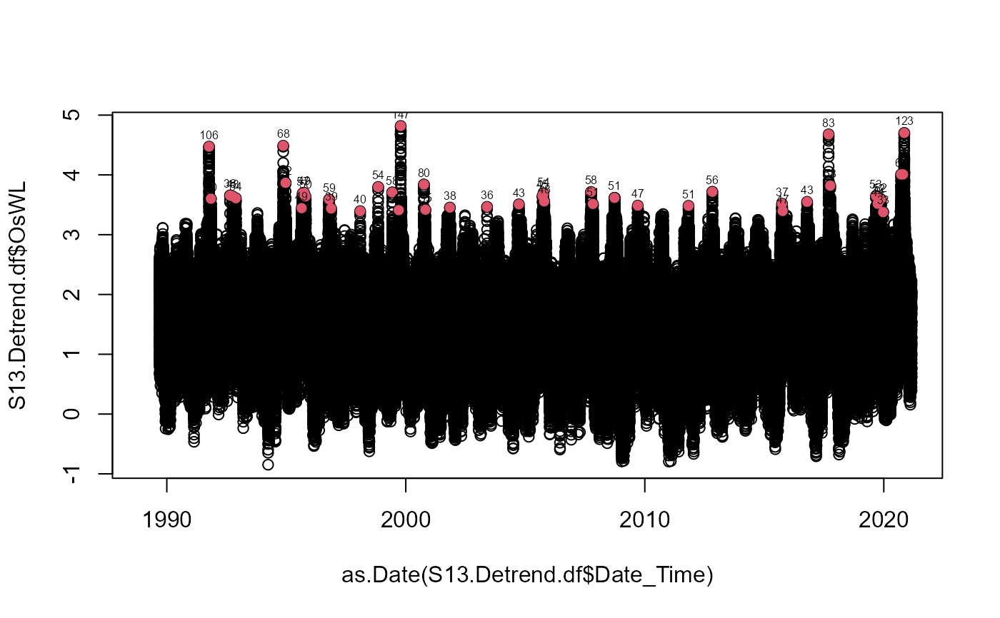

Ocean-side Water Level Intensity
OsWL_Intensity.RdCalculates the "intensity" of extreme water levels, as defined in Wahl et al. (2011).
Usage
OsWL_Intensity(
Data,
Cluster_Max,
Base_Line = mean(Data$OsWL, na.rm = TRUE),
Rainfall_Interval = 24
)Arguments
- Data
A data frame with co-occurring rainfall and O-sWL time series in two columns labeled
"Rainfall"and"OsWL", respectively.- Cluster_Max
Numeric vector containing indexes of peaks in the O-sWL column of
Data. If analyzing a sample conditioned on O-sWL derived usingCon_Sample_2D()set equal to the$xconoutput.- Base_Line
Numeric vector of length one, specifying water level about which to calculate the intensity. Default is the mean O-sWL.
- Rainfall_Interval
Numeric vector of length one, specifying length of time before and after a peak over which to sum rainfall totals. Total window width is 2*
Rainfall_Interval+1. Default is24.
Value
A data frame with the following columns:
Pre.HighIndex of the OsWL column ofDatacontaining the preceding high water level.Fol.HighIndex of the OsWL column ofDatacontaining the following high water level.Pre.LowIndex of the OsWL column ofDatacontaining the preceding low water level.Fol.LowIndex of the OsWL column ofDatacontaining the following low water level.IntensityIntensity of the O-sWL.VTotal rainfall volume withinRainfall_Intervalbefore and after the peak.
Examples
#Decluster O-sWL series at S-13 using a runs method
S13.OsWL.Declust = Decluster(Data=S13.Detrend.df$OsWL,
SepCrit=24*7, u=0.99667)
#Calculate O-sWL of the identified cluster maximum
intensity = OsWL_Intensity(Data=S13.Detrend.df,Cluster_Max=S13.OsWL.Declust$EventsMax)
#Plot O-sWL series identifying cluster maximum (in red) and print "intensity" above each maximum
plot(as.Date(S13.Detrend.df$Date_Time),
S13.Detrend.df$OsWL)
points(as.Date(S13.Detrend.df$Date_Time[S13.OsWL.Declust$EventsMax]),
S13.Detrend.df$OsWL[S13.OsWL.Declust$EventsMax],pch=16,col=2)
text(as.Date(S13.Detrend.df$Date_Time[S13.OsWL.Declust$EventsMax]),
S13.Detrend.df$OsWL[S13.OsWL.Declust$EventsMax]+0.2,
round(intensity$Intensity,0),cex=0.5)
